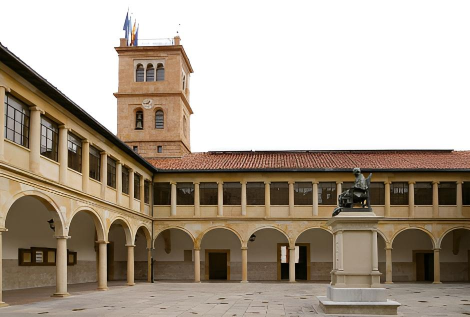

Innovación Docente
Mejora de procesos académicos y una docencia accesible y actualizada tecnológicamente.
Investigación de Calidad
Apoyo a la investigación emergente, con impacto social y colaboración entre grupos.
Universidad Eficiente
Gestión transparente, eficiente y actualizada tecnológicamente.
Conoce al Equipo
Somos un grupo de profesores e investigadores del colectivo B2 pertenecientes al Departamento de Informática.
Explora los candidatos que componen la candidatura pasando el cursor sobre ellos.
Detalle del candidato
Elige un candidatoDescripción del caldidato
